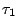
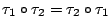
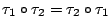

| |
總結上述對于空間的保長變換和向量代數的討論，我們再提綱絜領地把所得的結果和認識作一概括性的系統列述：
- 1.
- 反射對稱是空間中最為簡單的保長變換，而空間的所有其他保長變換又都可以由它們的組合而得之，所以它們又是最為基本者。再者，等腰三角形是一種最為初等簡樸的反射對稱圖形；在古希臘的幾何學中，能夠僅用等腰三角形的各種特徵性質之間的邏輯轉換來分析空間對稱性在幾何學中的各種各樣反映，究其原因其實也就是反射對稱性的組合，已經含蓋了保長變換的全體這個基本事實。
- 2.
- 將兩個反射對稱
,
加以組合，其所得的保長變換以
 , ,  是否相交而分成兩種：當 是否相交而分成兩種：當
 時
是一個平移，它把空間每一點在 , 的公垂線上由
往 的方向向前移動
；當 時
是一個平移，它把空間每一點在 , 的公垂線上由
往 的方向向前移動
；當
 時，
保持其交線 時，
保持其交線  上的每一點固定不動，而其他各點 P 則在其
的垂面 上的每一點固定不動，而其他各點 P 則在其
的垂面  中以
為中心作
的旋轉。 中以
為中心作
的旋轉。
- 3.
- 兩個平移 ,
 的組合還是一個平移，而且
 。用群的術語來說，空間所有平移組成的是保長變換群的一個正規子群；從幾何的本質來看，一個平移把空間每一點都作了一個同向等距的位置移動，所以它是位移的自然「量化」，稱之為位移向量。總之，平移和位移向量是同一事物的兩種觀點；從變換觀點來看叫做平移，從幾何的本質來看則是位移向量，這是同一事物的兩面觀，各有所長。我們用前者來定義其加法和倍積，但是在討論長度、角度、面積、體積等等的幾何內含時，則自要採取位移、有向線段這種幾何的觀點。在第二節中的討論中，這種觀點的自然轉換是十分明顯的。 的組合還是一個平移，而且
 。用群的術語來說，空間所有平移組成的是保長變換群的一個正規子群；從幾何的本質來看，一個平移把空間每一點都作了一個同向等距的位置移動，所以它是位移的自然「量化」，稱之為位移向量。總之，平移和位移向量是同一事物的兩種觀點；從變換觀點來看叫做平移，從幾何的本質來看則是位移向量，這是同一事物的兩面觀，各有所長。我們用前者來定義其加法和倍積，但是在討論長度、角度、面積、體積等等的幾何內含時，則自要採取位移、有向線段這種幾何的觀點。在第二節中的討論中，這種觀點的自然轉換是十分明顯的。
- 4.
- 位置是空間最為基本原始的概念，由此可見位移向量理所當然地是空間的最為基本原始的幾何量。第二節中所討論的向量代數基礎理論也就是要把其他各種各樣基本幾何量歸結到位移向量去表達、計算；由此自然地產生了內積和 ×-積運算，但是這種順理成章、返璞歸真的探索的成果，不但求得用位移向量去表達、計算其他基本幾何量的精而簡的公式，而且還把定量幾何學中的基本定理如相似三角形定理、勾股定理和面積勾股定理等等有系統地轉換成向量代數中的運算律！
例如：
- (i)
- 向量加法的定義（即[定理 5.1]）植基于空間的平直性（亦即平行性或三角形內角和恆為平角）。在古典幾何學中關于平行的基本定理就是平行四邊形的各種特徵性質之間的轉換，而平行四邊形定理所轉換而得者就是向量加法的交換律！
- (ii)
- 相似放大縮小是（歐氏）空間的特色，這也就是向量的倍積的來源。而關于相似形的基本定理——相似三角形定理——用倍積來表達就是倍積分配律：
- (iii)
- 關于長度和角度的基本定理——勾股定理及廣義勾股定理——經過一番分析和整理之後又可以簡化、優化而成為簡單易用的內積分配律：
- (iv)
- [定理 5.4] 和 [定理 5.5] 所總結的 ×-積運算律乃是空間
幾何學中關于面積、體積、兩面角等等的基本定理是也！但是這些基本定理在古希臘時期尚未能發現。
由上述分析可見向量運算不僅提供了表達計算各種各樣基本幾何量的有效能算的代數公式，而向量運算律本身其實就是一套完美精簡的幾何基本定理，且其中重要的都是分配律或多線性函數這種簡單易用的形式表達。由此可見，向量代數乃是空間結構的全面而且美妙的代數，而其運算律則是空間本質（亦即基本定理所表達者）的一種至精至簡的表達。
- 5.
- 空間的基本結構在于任給兩點 A, B 之間的唯一最短通路
——直線段
 ，而空間的基本本質主要的就是對稱性和平直性。在古希臘幾何學中，用疊合公理來描述對稱性，而用平行公理來描述平直性；在現代的幾何學中，我們把空間的對稱性的總體賦予自然而且全局的結構，稱之為保長變換群，而其中的平移子群則系統表述了空間的平直性，從而把空間幾何學的研討提升到保長變換群的不變量理論。再者，向量運算都是在正交變換之下協變的 (covariant)，所以用向量運算所得的數量 (scalar) 都自然而然是不變的 (invariant) 。 ，而空間的基本本質主要的就是對稱性和平直性。在古希臘幾何學中，用疊合公理來描述對稱性，而用平行公理來描述平直性；在現代的幾何學中，我們把空間的對稱性的總體賦予自然而且全局的結構，稱之為保長變換群，而其中的平移子群則系統表述了空間的平直性，從而把空間幾何學的研討提升到保長變換群的不變量理論。再者，向量運算都是在正交變換之下協變的 (covariant)，所以用向量運算所得的數量 (scalar) 都自然而然是不變的 (invariant) 。
總結上述五點分析，我們認識到用向量代數研討幾何可以寓不變量理論于向量運算之中，而空間的基本性質和基本定理的運用則轉化為其運算律的系統運用。這就是學習向量幾何，並用以探索大自然所
要達到的境界！
|
|
|